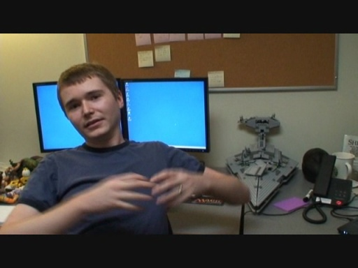

Shows - Inside Channel 9
Shows - Inside Channel 9
Updates, code walkthroughs and general technical discussions from the dev team behind Channel 9.
The Channel 9 beta has been updated... [2008/05/16]
I know you've heard it before, but we are heading down the final path to ship.... really we are
As part of that path, we've been working hard for the past few months focused on making sure that o…
Dev Diary for April 23 [0:28:10] [2008/04/24]We're back with another update! This time we have a mix of content, including:
Sampy talking about SQL optimization using indexed views Erik covering a relatively simple, but useful, web control…
Dev Diary for April 15th [0:17:55] [2008/04/16]
Just a quick, and poorly filmed, update from the dev team on what we worked on during the last sprint and what we are building right now. Yes the filming is shoddy, and yes the screens are hard to…
The Channel 9 beta has been updated [0:00:30] [2007/09/29]Hey folks, it has been awhile since we first published the Channel 9 beta site and we thought you might be wondering where we are with the whole 'new Channel 9' project. Well, we have been moving…
Building a Silverlight player for Channel 9 [0:14:49] [2007/09/27]
Mike Sampson, your friendly-neighborhood media-encoding and SCRUM specialist, lives in the office right next to mine. I managed to walk the 12 steps over there and talk to him about what he's…
Channel9 Version 4: 3 Minutes with the dev team [2007/03/28]We're working hard but we'll take three quick minutes to let you know what we're up to.
Enjoy.
Shipping the 10 update [2006/09/28]Last week we shipped out an update to 10 that not only refreshed the design but set up the EvNet platform to support Channel9.
You've seen us before and you'll see us again as we move forward with th…